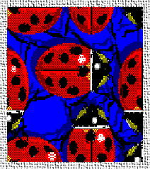
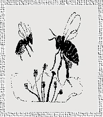

shortly after their arrival on my property, and there are practical methods of control for the few pests that remain. I encourage birds, beetles, snakes, wasps, and some underground helpers, too. Between them, they can almost do it all.The total eradication of any one organism defeats nature's balance. Out of some 86,000 insect species in the US, 76,000 are considered beneficial. Only 1 percent of the world's insects are listed as pests of agriculture. Insects are vital to the very existence of higher life. Without them, possibly the endless cycles of life, death, decay, and birth could not function. Insects break down waste materials of every sort; some improve the soil; some control weeds; some are pollinators; and some are eaten by predators, who in turn, play their own vital role in the balance of all things natural. In gardening, we should seek prevention of the development of large populations of destructive pests rather than complete destruction of them. This is the only way in which nature will agree to participate in your efforts; and with just a little encouragement, nature will be quite content to do most of the work.
Many people feed the birds during the winter for humanitarian sympathy, for the color and life they bring to the winter scene, and for the sense of companionship they provide. I provide food and shelter during the winter for only one reason, i.e. insect control. Overwintering birds manage on seed proteins and seed oils, but continuously search out insect eggs and pupae as it is their habit to forage when they are not resting or socializing. Many of these birds will remain close to your property all year long.
Half the food of some 1400 species of North American birds consists of insects. In the spring, most of them, even seed-eaters such as cardinals and English sparrows feed their young a diet higher in insects than that which they eat as adults. Through the early summer, many birds will rear their young entirely on insects.
I provide only two types of food, and I provide that food all year. First, is beef kidney fat, commonly known as suet. This can only be obtained from an independent butcher as the supermarkets no longer process whole cattle in my area, where suet is free of charge. It can be used as is, or it can be rendered in the microwave, then mixed with corn meal, rolled oats, a bit of peanut butter, or sunflower seeds for even better results. Birds feeding on suet during the winter, and bringing their offspring to the feeders in summer are mostly insect and caterpillar eaters. These include downy, red bellied, hairy, and red headed woodpeckers, white and red breasted nuthatches, sapsuckers, blue jays and starlings. Second, is safflower and sunflower seed (oilers). Birds attracted to high oil content seeds include house finches, chickadees, cardinals, etc. all year, and grackles and red-winged blackbirds during the spring nesting season. These birds prefer insects, but need the oil in the sunflower seeds during cool and cold weather when insects are not plentiful. Keep the insect eating birds on your property all winter, and they will stay all summer. I do not purchase millet and other wild bird seed mixes because they can get moldy under certain weather conditions and become unhealthy for my friends; besides that type of seed tends to attract pigeons.
Feeding the birds is not the whole story though. They need habitat for safe sleeping and squirrel-proof nesting boxes or trees. They need materials for nest building. They need water every day, and mud in the spring. They need an environment which is friendly all year round. That means: minimize the loud noises, the cats, dogs, and crows. The japanese beetles don't have a chance on my property as the cardinals and the blackbirds pounce on them as they are emerging from the ground. To turn your birds into full time residents, provide lots of trees, some dense thickets, plenty of evergreens to discourage the crows and squirrels, a giant pfitzer or two, fresh water, and plenty of nest boxes; in simple terms, just emulate nature as best you can.
Do not discriminate against the birds that show up in the spring to raise families, even if they seem to chase smaller birds away from the feeders. Aggressive birds may not have to wait in line, but all of your smaller birds will have their turn each day. Birds are your most important allies.
I have not had occasion to purchase beneficial insects. I grow many plants which attract beneficial insects. There is a list of 49 such plants on page42.htm. and I cultivate 38 of those. When your property is attractive to birds, the beetles will stay with you as well. I do provide habitat for overwintering. For ladybird beetles, I set aside several areas where fall leaves are not to be raked up until May. In addition, I provide areas of tall ornamental plantings and tall weeds which are allowed to stand during winter. I also bring dozens of ladybugs inside my screened porch in late fall when they begin collecting on the screens. Then, in the spring, they all seem to wake up on the same sunny day, and I let them all out again. I do make a point of giving close attention to any area that I am about to spray with a soapy solution for aphids to make sure that there are no beetle larvae. If I spot even one larvae working the site, I will not spray that plant. These beetles seem to prefer dense stands of ferny plants for conducting their social lives. A 4 x 8 foot bed of Tanacetum vulgare (tansy) is a veritable factory for ladybugs on my property in the years in which the tansy aphid is present. From spring through late summer, it is fillled with several native species, but also includes great numbers of Asian beetles which are the type normally purchased by other gardeners. If your property is attractive to the beetles, you will never have to purchase them.
I have two colonies of ordinary garter snakes. One group inhabits hollow logs in the vegetable garden. They eat slugs, crickets, beetles, and the occasional earthworm. They feed in niches where the birds are not very efficient, so they are as good as the birds, and just as entertaining. However, they are easily dispatched with the lawnmower, and a great deal of care must be taken in areas where they are known to hunt. Another group inhabits the log face of a raised terrace in front of the house, and they work the ornamental gardens. Keeping garden snakes on your property is simply a matter of providing habitat, and keeping children from harassing them.
The Chicago area is a bit too cold for lizards and salamanders, but I do have one toad, and am searching for more. It has been with me for several years, and I see it out hunting over a wide area in the evenings. It is practically invisible until it moves. If you have a pond, by all means provide some frogs.
Wasps are deadly caterpillar hunters. They search for protein in any form with boundless energy all during their reproductive season. In late summer, their taste turns into a sweet tooth and they could be a nuisance at a picnic. But a garden is no picnic, and the wasps become fair to good pollinators for you in their search for sweets. Do not destroy the homes of the mud daubers or the cones of the paper wasps as they are very docile, and so intent upon providing for their families, that they would never attack except in self defense. Give credit to the bees, bumblebees, and wasps for some modicum of intelligence. If one is buzzing around your head, some scent or ultraviolet reflection is being analyzed, and not finding the flower, it will soon leave. When I am dead-heading flowers, the honey-bees, bumblebees, and wasps have never landed on me, even though they were working flowers all over the same plant. When foraging, they have no fear until you swat at them. I feel sorry for the persons with the genuine allergy to bee venom, but I think most of the aversion to the presence of flying insects is pure hysteria, brought about by a lack of knowledge. The bald-faced hornets working my grapes have never bothered me when I was picking, and I regularly observe them with captured cucumber beetles. The yellow-jackets have never bothered me when I was picking up dropped apples and pears from the ground, despite the presence of several hundred of them working that fruit. I believe in keeping the ground under the fruit trees cleaned of dropped fruit so that they will have to search for their sweets in flower heads where I will get a better crop of seeds.
While I do not specifically provide habitat for wasps, several varieties have chosen my property for nesting, and their populations seem to be growing. I do, on the other hand, provide homes for the orchard mason bee (Osmia), and all variety of bumblebees, carpenter bees, solitary bees, and flying beneficial insects of every description. Many species of hunting wasps are using my nesting blocks designed for solitary bees. For more information on the orchard mason bee, see Native Pollinator References.
Nesting blocks for solitary bees are simple to construct using wood blocks or plastic drinking straws. In wood blocks, drill holes ranging from 1/8th inch to 5/16th inch diameter which are not less than 4 inches long, but not through the block. Nest galleries with both ends open will not be used. For the Orchard Mason Bees, the galleries must be 5/16 inch diameter and a full 6 inches long. Plastic drinking straws of 1/4th inch and 5/16th inch diameters are easier to use. Just pack them into a straight sided container so that one end of each straw is tightly pressed against the bottom of the container. The straws should be fixed in place with tape so that the bundle does not move about in the weather. Attach these types of nesting blocks to garage sides or fences so that the galleries are horizontal, and get protection from rain and from sun during the hottest part of the day.

Orchard Mason Bees
When transplanting or digging in your garden soil for any reason, do not automatically kill anything that moves. Ground beetles, centipedes, and millipedes are carnivorous protein hunters. Smash the grubs and slugs and cutworms that you find, but leave things you cannot positively identify alone. While the earthworms do not directly help control your insect pests, it is worth mentioning that they are worth their weight in gold, when it comes to bringing nutrients to the surface, and aerating your soil. Some spiders live underground or on the ground. These inveterate hunters are more important to your garden than the web-spinning sheet spiders and crab spiders who prey on gnats, flies, and mosquitos. Wait a second, while digging, give them a chance to walk away.
Here are some notes on the few pests which persist despite my Army. The cabbage worm is easily controlled on your brassicas with Bt kurstaki. I especially like the powdered formulation.
Asparagus beetles (see article) are kept at bay with the use of tansy clippings. I grow a patch of tansy solely for that purpose. Place the clippings on the ground around the asparagus plants every 2 to 3 weeks. Do not plant the tansy in any garden area because of its invasiveness. It is best planted in a cleared patch of lawn where it can be controlled with a lawnmover. It takes several seasons to achieve notable results.
Squash vine borers (see article) are frustrated when finding squash with hard vines like Butternut squash. For zucchini, instead of row covers or shaving cream, I prefer succession planting. I pull the plant out at the first sign of the borers, destroy the worms. There is no loss, since more plants are maturing, and zucchini is so prolific.
For flea beetles, I cover the sides of the eggplant cages with a light row cover so they cannot get to the plants. Radishes are harvested so quickly, there is no appreciable damage. And, I no longer grow mustard or turnip greens in favor of swiss chard which is not on the beetles' menu. In zone 5, mustard and turnip greens can be grown in the fall, after the flea beetles are gone.
For corn borers and other corn lovers, my solution is an easy one. I pre-sprout the corn seed in my garden room three weeks before last frost and transplant to the garden when 4" tall on the average date of last frost. Corn is a grass and can stand light frosts without damage, but will not sprout in cold soil. As a result, all my corn has been harvested between July 12th and July 18th, before the attackers of corn become active. When the cucumber beetles start to arrive, all the silks have turned brown, and there is nothing for them to eat. When the earworms and borers start to arrive, there are no ears left on the stalks for them to burrow into. The english sparrows make a mess of the tassels, but they do more good than harm because I get near perfect pollination of the silks. Knee high corn on Independence Day is the standard you can hope for after direct sowing when the soil warms up, followed by lots of chemical control. I don't care for corn ears filled with earworms and flour beetles. It is better to pre-sprout and plant early for the best sweet corn.
Pillbugs (sowbugs) and earwigs are not serious pests for me. However, they love to raise their families under boards placed on the ground, and can be trapped easily if they become a problem. They also love to congregate in potted plants, especially in nursery pots where the drainage holes are accessible from the sides of the container. By giving away many seedlings in nursery pots each year, I manage to deport my pillbugs to the properties of my visitors, who are under the impression that they are getting a free plant.